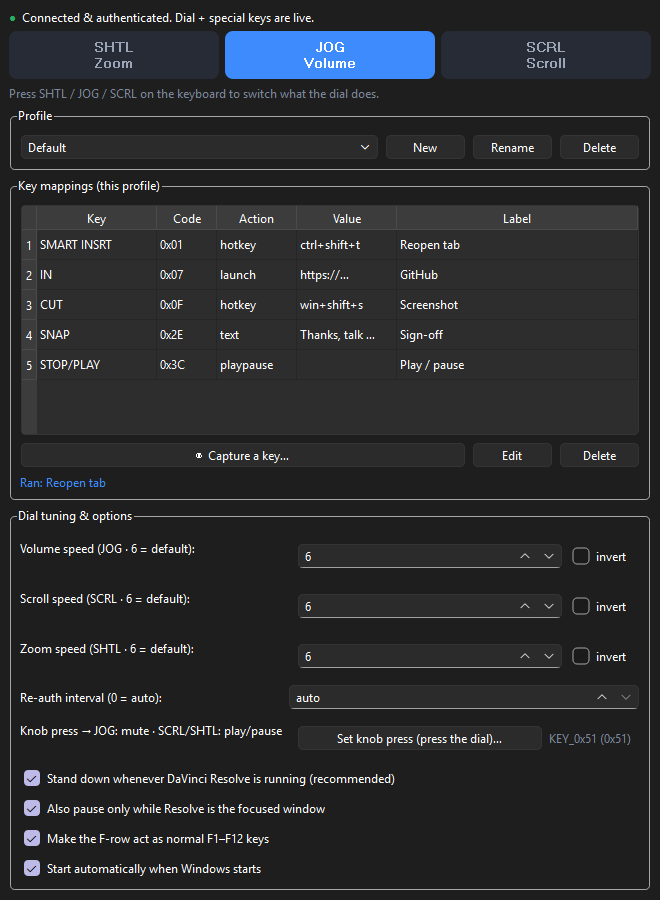

Your Editor Keyboard, outside Resolve.
Outside DaVinci Resolve, the Blackmagic Editor Keyboard is just a keyboard: the search dial and the editing keys stay dead. This small Windows app wakes them up. The dial runs volume, scroll and zoom, every editing key becomes a macro, and the F-row works without Fn.
Try it: drag or scroll the dial, switch modes, click the dial to press it. A simulation of what the real one does.
F1 to F12.
No Fn.
Away from Resolve, the keyboard's F-row sends its own vendor codes, so normally you need to hold Fn for every F-key. The app turns them back into real F-keys: they hold, repeat at your Windows repeat rate, and combine with Ctrl, Alt and Shift.
Last key
Every editing key,
a macro.
Click Capture a key in the app, press any key on the keyboard, and decide what it does. Keep separate sets for editing, office work or games, and switch profiles with one click.
- Smart insrtReopen the last closed tabhotkey · ctrl+shift+t
- CutScreenshot a regionhotkey · win+shift+s
- InOpen a website or an applaunch · https://github.com
- SnapType a sign-offtext · Thanks, talk soon!
- Stop/PlayPlay or pause any playermedia · play / pause
- Live O/WrNew terminal tabshell · wt -w 0 nt
Five kinds of action: a key combination, typed text, launching an app, file or URL, a shell command, or a media key.

Resolve always
comes first.
Resolve needs the keyboard to itself, so the app steps aside the moment Resolve starts and picks the keyboard back up when Resolve closes. Nothing to switch, and Resolve works exactly as it always did. While Resolve is open, the F-row is Resolve's too.
Install in a minute.
No drivers, no Zadig, no admin rights. Plug the keyboard in over USB and run the app.
Download
Get OutsideResolve-win64.zip and unzip it anywhere. Prefer one file? Take the portable .exe.
Run
Start
OutsideResolve.exe. It is not code-signed, so SmartScreen may ask once: choose More info, then Run anyway.Turn the dial
The status turns green and the dial is live. Tick Start automatically when Windows starts to keep it in the tray every day.
Or run it from source
Python 3.11 or newer. build.bat makes the executable, install.bat installs it with shortcuts.
> git clone https://github.com/dismxo/outside-resolve.git
> cd outside-resolve
> py -m pip install -r requirements.txt
> py main.pyHow it works.
The dial and the editing keys live on a vendor HID interface that stays silent until the computer answers a challenge. The keyboard asks again every ten minutes. Here is the handshake, byte for byte.
| OUT to the keyboard | 06 00 00 00 00 00 00 00 00 00 | Reset the authentication state. |
| IN from the keyboard | 06 00 c1 c2 c3 c4 c5 c6 c7 c8 | The keyboard's 64-bit challenge. |
| OUT to the keyboard | 06 01 00 00 00 00 00 00 00 00 | Our own challenge. Its answer is never checked. |
| IN from the keyboard | 06 02 ·· ·· ·· ·· ·· ·· ·· ·· | The keyboard's answer. |
| OUT to the keyboard | 06 03 r1 r2 r3 r4 r5 r6 r7 r8 | The response, computed from the challenge. |
| IN from the keyboard | 06 04 58 02 ·· ·· ·· ·· ·· ·· | Accepted. 0x0258 = 600 seconds until it asks again; the app renews at half that. |
What the keyboard sends
Report 0x03 is the dial: a mode byte, then a signed 32-bit delta that grows with how fast you spin. Report 0x04 lists up to six keys held at once as 16-bit codes. The F-row reports codes 0x1F–0x2A instead of real F-keys, which is the whole reason it needs Fn.
The response function was reverse engineered by Sylvain Munaut for the smaller Speed Editor. The full-size keyboard accepts the same one; its report layout was decoded from live captures with the discovery.py tool in the repository.
Why it talks to Windows directly
The keyboard never answers a request for its product name. Each request hangs for five seconds and blocks everything else on the line, and the usual HID library asks for it on every interface. Finding the keyboard took 15.07 s.
The app skips that request and reads only what Windows already knows: finding the keyboard takes under 1 ms, the handshake about 40 ms, and the idle app sits on a blocking read at next to no CPU.